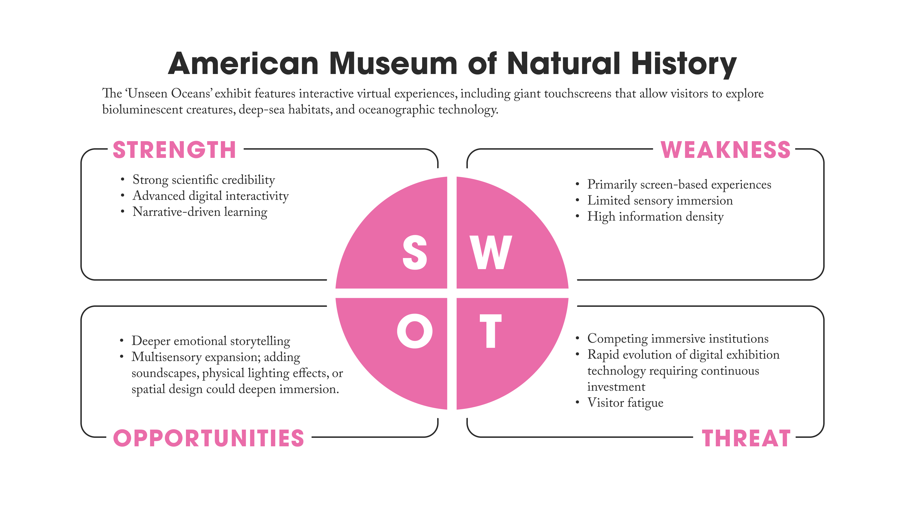
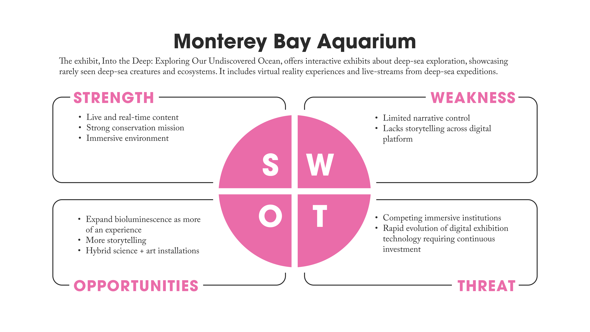
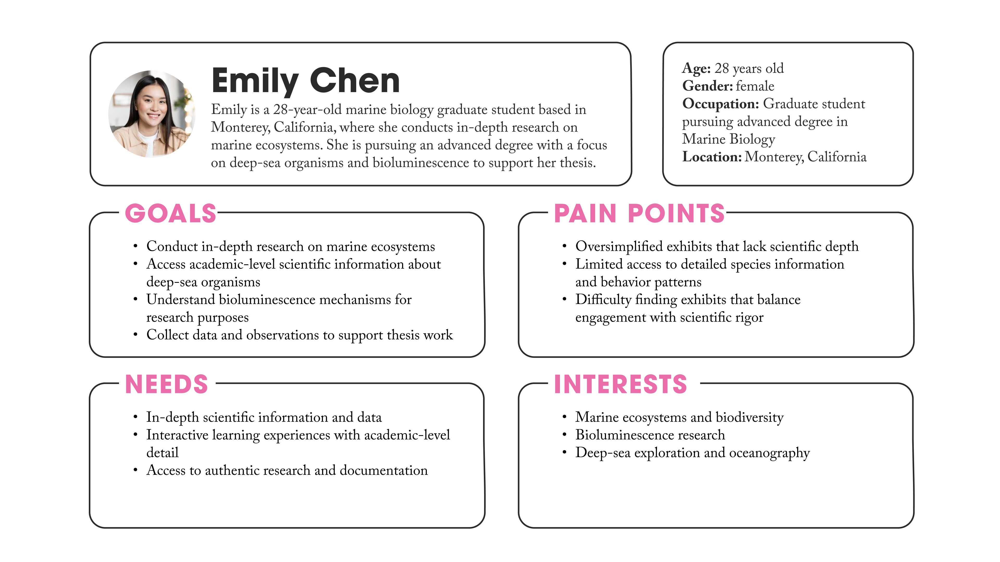
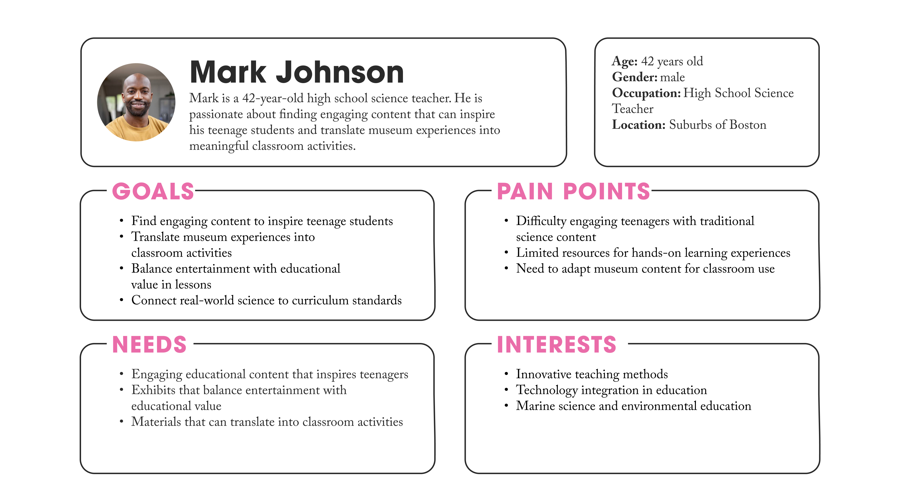
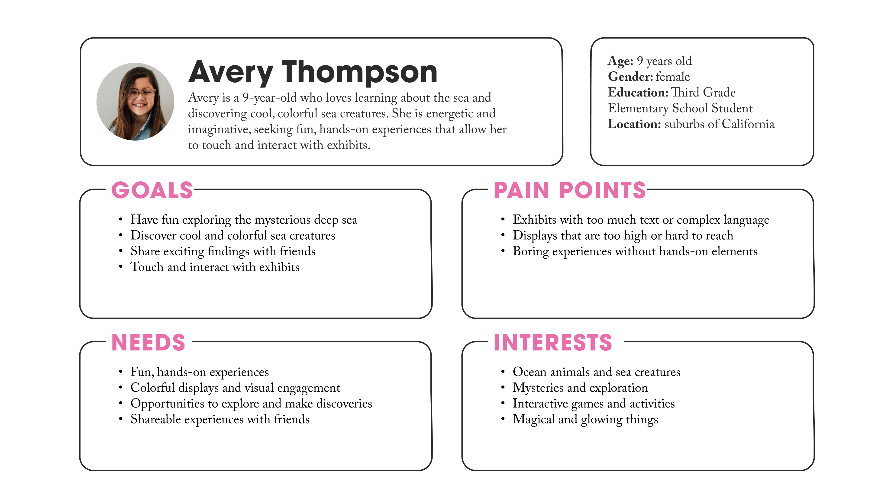
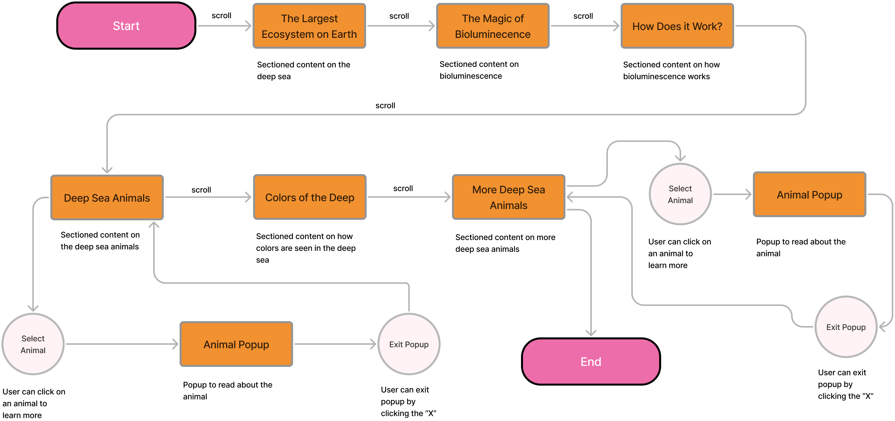
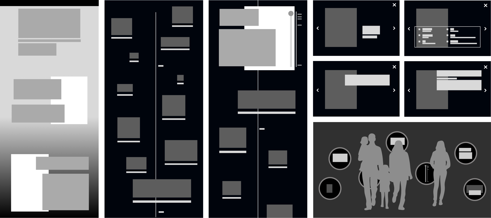
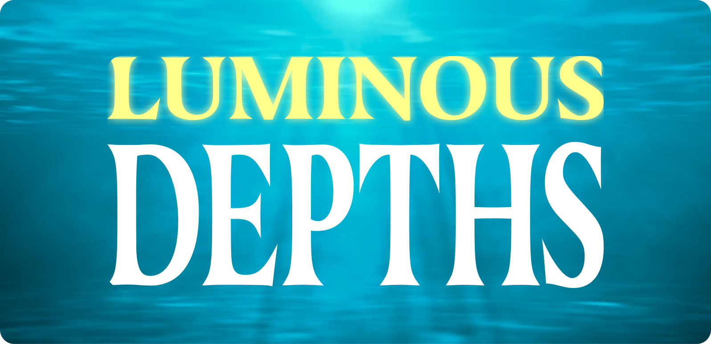

& Web Designer • Illustrator

Luminous Depths
Services
UX/UI Design, Experience Design,
Web Design, Environmental Design
Role
Researcher,
UX/UI Designer
Overview
Luminous Depths is a multi-platform digital exhibition experience designed for the Monterey Bay Aquarium that explores the mysterious world of deep-sea bioluminescence. This project bridges physical and digital environments, creating an immersive journey into the ocean's darkest depths where light becomes a language of survival. The exhibition serves both in-person visitors through an interactive environmental installation and online audiences through a scrollytelling web experience, ensuring accessibility while maintaining the wonder and scientific rigor that defines deep-sea exploration.
Challenge
The primary challenge was creating a cohesive multi-platform experience that would engage three distinct user groups—academics and researchers, educators, and children—while maintaining scientific accuracy and emotional impact. The design needed to make visitors aware of the deep-sea environment rather than the technology itself. Additionally, the project required balancing ambitious interactive features, such as projection mapping, touch-responsive surfaces, and scrollytelling animations, within a realistic timeline and technical scope.
Research and Analysis
The competitive analysis examined interactive museum experiences and digital exhibitions focusing on immersive storytelling. The American Museum of Natural History's ocean exhibits demonstrated effective use of bioluminescence simulations, while the Monterey Bay Aquarium's existing marine life presentations provided insight into visitor expectations and institutional branding. Analysis of scrollytelling techniques revealed opportunities to simulate descent into the ocean through progressive darkening and animated content. Research into projection mapping systems and interactive floor installations, particularly the concept of bioluminescent ocean simulations that react to visitor movements, informed the physical space design. The competitive landscape showed a gap in exhibitions that seamlessly integrated scientific depth with accessible, magical storytelling across both digital and physical platforms.


User Personas
The three personas represent fundamentally different needs that must coexist within a single exhibition design—a challenge that defines the success of multi-audience educational experiences. The critical insight here is not what each persona wants individually, but rather the inherent tensions between their requirements and why designing for all three simultaneously matters. The research-focused academic needs depth and precision, the educator requires content that translates into actionable teaching tools, and the child demands immediate sensory engagement. These needs often conflict: scientific rigor can overwhelm younger audiences, while oversimplification alienates researchers. The exhibition's design challenge lies in creating layers of information that serve different cognitive needs without fragmenting the experience. This inclusive design philosophy transforms the exhibition from a single-purpose display into a flexible learning ecosystem for all audiences.



Ideation and Concept Development
Concept development centered on creating parallel experiences that would feel cohesive despite different platforms. For the website, the scrollytelling format emerged as the ideal solution, simulating a descent from the ocean surface into increasing darkness, with bioluminescent creatures appearing as users scroll deeper. Interactive elements include clickable animals that reveal detailed information pages, callouts with facts throughout the journey, and an interactive feature demonstrating how light appears underwater at various depths. For the physical space, the concept evolved into an underwater-themed gallery featuring circular viewports scattered across walls, resembling submarine portholes. These touch-screen viewports display bioluminescent creatures and allow visitors to swipe through detailed information.


User Flow
The user flow was designed to gradually immerse visitors in the deep-sea environment, mirroring the experience of a real ocean descent. By starting at the ocean surface and progressively darkening the interface as users scroll deeper, the journey builds anticipation and wonder naturally. This approach serves all three user personas effectively. For children like Lily, the gradual reveal creates mystery and excitement, making each new bioluminescent creature feel like a magical discovery. For educators like Mark, the logical progression from surface to depths provides a clear narrative structure that mirrors how marine biology is actually taught. For researchers like Emily, the systematic organization by depth zones reflects authentic oceanographic categorization.
The flow prevents cognitive overload by introducing complex concepts in digestible layers. Visitors first understand where bioluminescence occurs (The Largest Ecosystem on Earth), then what it is (The Magic of Bioluminescence), followed by how it works (How Does It Work?), before encountering individual species. This scaffolded learning approach ensures that even youngest visitors can grasp scientific concepts while maintaining depth for adult audiences. The interactive elements—animal popups, the Colors of the Deep feature—are strategically placed after foundational knowledge is established, allowing visitors to explore deeper only when they're ready. This mirrors the exhibition's core metaphor: just as deep-sea creatures adapt to their environment gradually, visitors adapt to the exhibition's darkness and complexity at their own pace, creating an experience that feels discovery-driven.

Low-Fidelity Prototyping
Initial wireframes focused on information architecture and user flow for both platforms. The website sitemap outlined the progression from surface to deep sea, mapping content zones for different ocean depths and determining placement of interactive elements. Wireframes tested the scrollytelling mechanics, ensuring smooth transitions between depth zones and intuitive interaction patterns for exploring creatures. For the physical space, low-fidelity prototypes explored viewport placement, screen sizes, and visitor flow patterns through the darkened gallery.

Visual Identity
The visual identity aligns with the Monterey Bay Aquarium's established branding while creating a distinct identity for Luminous Depths. The color palette draws from the exhibition's environment: deep navy and black backgrounds represent the darkness of the deep sea, while bioluminescent yellow, blues, and red create the signature glow of deep-sea creatures. Photography consists of professional images sourced from the Monterey Bay Aquarium's collection, showcasing real bioluminescent organisms.
Logo
The logo captures the essence of deep-sea bioluminescence with glowing elements that suggest both scientific precision and natural wonder.

Typography
Typography balances readability with atmosphere, using clean sans-serif fonts for scientific information while incorporating subtle luminous effects for headers that evoke the exhibition's magical quality.
Exhibition Website
The website prototype features a fully immersive scrollytelling experience beginning at the ocean surface with introductory content about mid-water to deep-sea environments and bioluminescence. As users scroll, the interface progressively darkens, simulating descent into deeper waters. Animated text appears and fades in rhythm with the journey, while bioluminescent animals emerge from the darkness, each clickable to reveal detailed species information. The interactive light demonstration allows users to toggle between depths, showing how colors and visibility change underwater.


Environmental Design
The physical environment exhibition presents a darkened gallery transformed into an underwater realm. Various-sized circular viewports are scattered across walls like submarine portholes, each featuring touch screens displaying bioluminescent creatures through either live footage or high-quality video. Visitors can swipe through information layers on each screen, accessing species details, behavior patterns, and scientific facts. A dedicated interactive porthole hosts the light spectrum display, similar to the website feature, allowing visitors to observe how different colors penetrate water.
Reflection and Impact
This project successfully demonstrated how digital technology can enhance museum experiences without overshadowing content, fulfilling the principle that technology should reveal subject matter rather than itself. The multi-platform approach ensured the exhibition reaches both physical visitors and online audiences, extending access beyond the museum's walls. Key learnings included the importance of designing for diverse user groups simultaneously while maintaining a cohesive narrative, and the challenge of balancing ambitious interactive concepts with realistic technical implementation timelines. The project reinforced that effective exhibition design requires deep understanding of both subject matter and audience needs, with user personas serving as crucial touchstones throughout the design process.